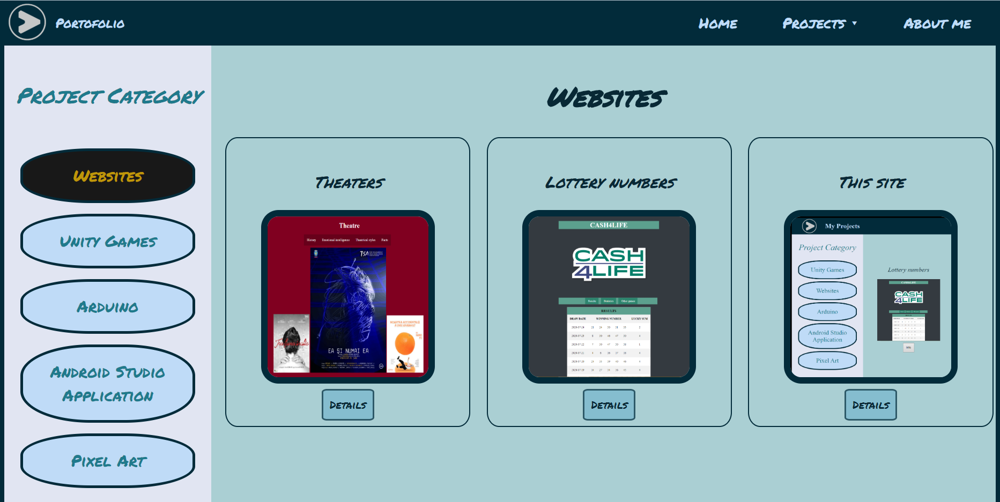
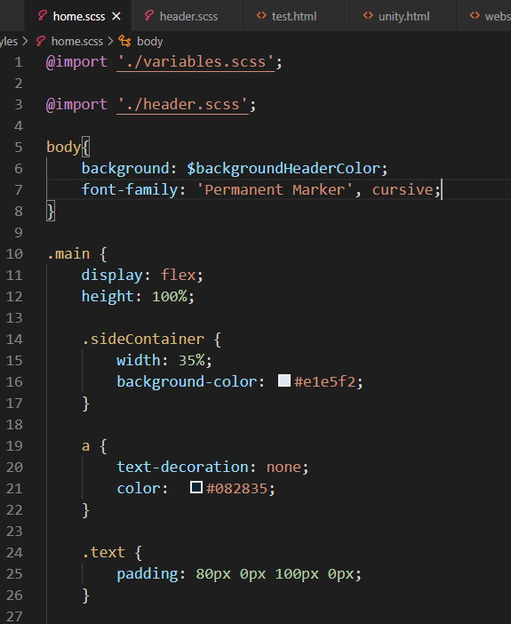
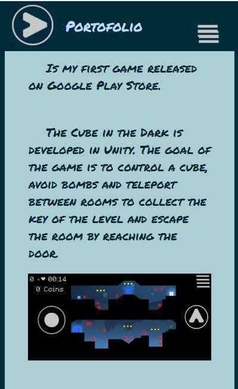
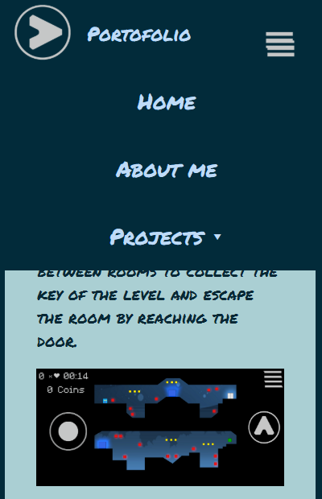

This site is designed to keep track of all my solo projects.
The site is consisted only of frontend development as HTML, CSS and JavaScript.
The part of the CSS is done with SCSS because the structure of the code is more simpler and clear. A good advantage is that you can split the scss files in multiple parts and reuse them in more then one file.
The site is web responsive. This part is done in CSS with the @media property.
The JavaScript part is consisted of the menu functionalities.
